Le projet
Easy Doc Content.
Le projet consiste a implementer une fonctionnalité de suivi d'historique sous forme de ligne de vie, cette fonctionnalité concerne une application Web de création de documentations techniques : EDC (EasyDocContent).
L'application permet de concevoir de la documentation facile à implémenter dans des logiciels. Pour permettre une bonne aide, simple et efficace de l'utilisateur.
A1.1.1 - Analyse du cahier des charges
A1.1.2 - Étude de l’impact de l’intégration d’un service sur le système informatique
A1.2.4 - Détermination des tests nécessaires à la validation d'un service
A1.3.4 - Déploiement d’un service
A1.4.1 - Participation à un projet
A1.4.2 - Évaluation des indicateurs de suivi d'un projet et justification
A2.3.1 - Identification, qualification et évaluation d'un problème
A2.3.2 - Proposition d'amélioration d'un service
A3.1.3 - Prise en compte du niveau de sécurité nécessaire à une infrastructure
A4.1.1 - Proposition d'une solution applicative
A4.1.2 - Conception ou adaptation de l'interface utilisateur d'une solution
A4.1.4 - Définition des caractéristiques d'une solution applicative
A4.1.6 - Gestion d'environnements de développement et de test
A4.1.7 - Développement, utilisation ou adaptation de composants logiciels
A4.1.9 - Rédaction d'une documentation technique
A4.1.10 - Rédaction d'une documentation d'utilisation
A4.2.1 - Analyse et correction d'un dysfonctionnement, d'un problème
A4.2.2 - Adaptation d'une solution applicative aux évolutions
A4.2.3 - Réalisation des tests nécessaires à la mise en production
A5.2.3 - Repérage des compléments de formation ou d'auto-formation
A5.2.4 - Étude d‘une technologie, d'un composant, d'un outils
Stage première année
Compétences acquises.
PRODUCTION DE SERVICE
A1.1.1 - Analyse du cahier des charges
Le projet consiste a réaliser une ligne anti-chronologique permettant d’afficher toutes les actions effectuées sur le document actif.
Le besoins du projet était les suivants : Affichage de l'avatar, affichage du nom complet, affichage des activités alternivement (gauche/droite), affichage des icons en fonctions de l'action réalisée.
Pour ce fait j'avais besoin de faire des modifications sur le Back-End et Front-End en se basant sur la timeline version utilisateurs.
Il fallait donc récupérer les informations (Activities)(JSON) pour générer du code HTML de façon dynamique pour créer des étiquettes disposées à droite ou à gauche.
Enfin le bouton ('View More') permet d'afficher les 10 activities suivantes pour ne pas tout charger dès l'affichage de la page pour ne pas rendre l'application plus lourde qu'elle n'est déjà.
A1.1.2 - Étude de l’impact de l’intégration d’un service sur le système informatique
Le back est structuré en service web. Il fallait donc que je prenne en compte l'impact qu'aurait pu avoir mon intégration sur la structure.
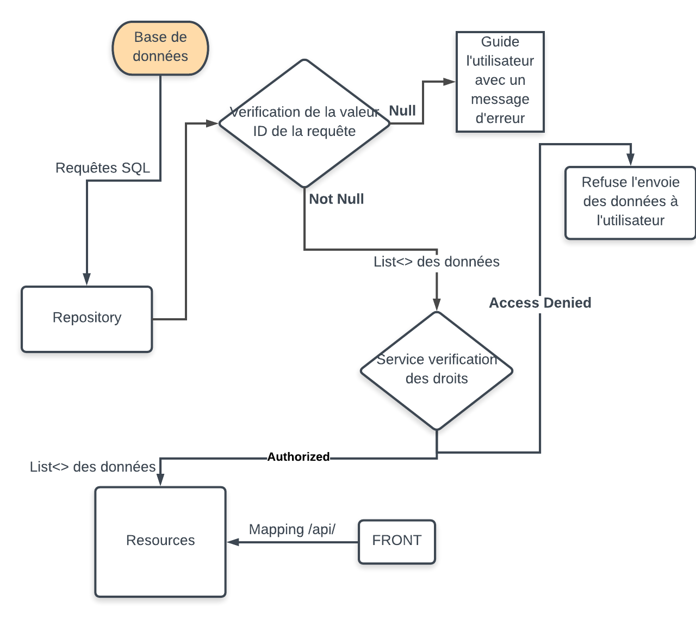Le back .
A1.2.4 - Détermination des tests nécessaires à la validation d'un service
Pour pouvoir vérifier et valider les informations développées et récupérées par le back et le front. Il faut effectuer des tests d'intégrations.
Tout d'abord pour le back, il faut créer une documentation, des utilisateurs pour permettre la création des activités. Il faut donc verifier dans un premier temps que la documentation est bien à l'état CREATED pour ensuite lui ajouter des commentaire que j'ai créé au préalable. L'état devra donc etre ensuite MODIFIED. Et un dernier cas à tester, le cas si la documentation est donc introuvable à l'url /api/documentation/{documentationId}/activities il faut indiquer l'erreur 500. Si ces tests sont fonctionnels l'intégration du back peut être éffectuée.
Enfin pour le front, il faut créer une documentation, des utilisateurs pour permettre la création des activités aussi. Dans ce cas il faut verifier les actions au niveau des composants Angular. D'abord si les composants sont bien générer lors de leurs appels. Ensuite si les badges crée
A1.3.4 - Déploiement d’un service
Gerrit est une application Web permettant de faire de la relecture de code et valider la qualité pour une bonne intégration des services. Un code est approuvé si le la qualité de la strucuture est bien respectée mais aussi si le code arrive a build. Ensuite le chef technique verifie à son tour.
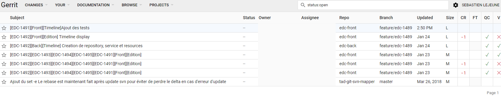A1.4.1 - Participation à un projet
Suivi de l'évolution du projet et des phases de développement. Attribution des taches et définition des poids pour en établir la durée du projet.
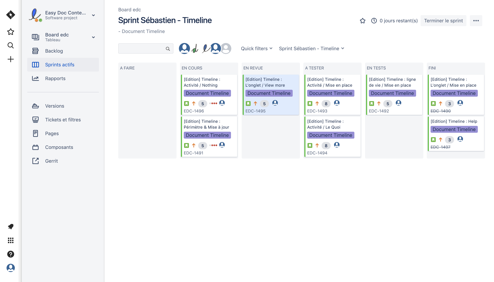A1.4.2 - Évaluation des indicateurs de suivi d'un projet et justification
Avant de commencer le projet j'ai du identifier la difficulté de chaque tâches a réaliser. Cela permet à mon chef de projet d'établir le temps accorder à la réalisation du projet.
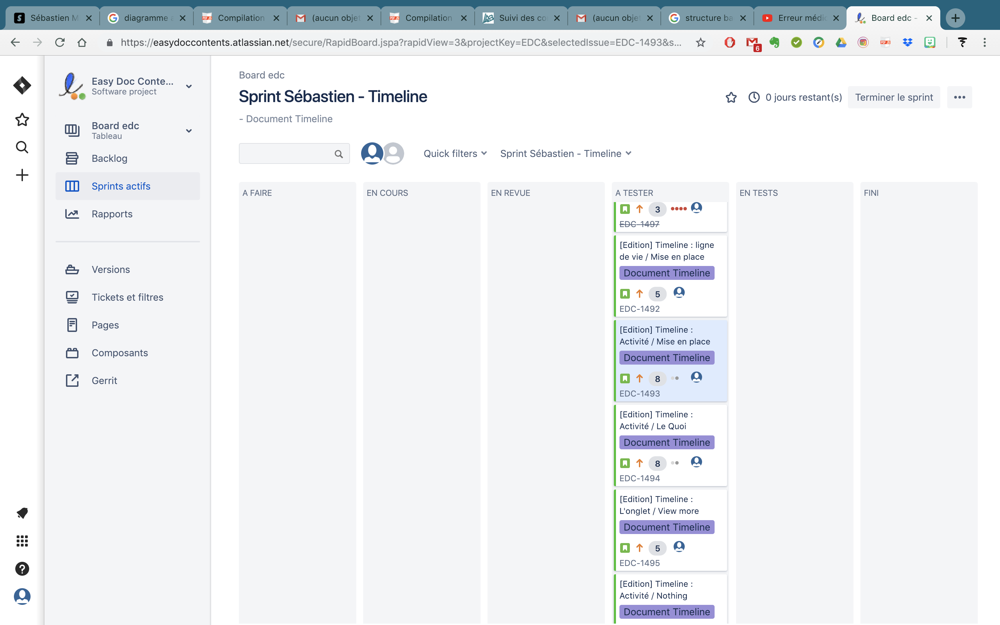FOURNITURE DE SERVICE
A2.3.1 - Identification, qualification et évaluation d'un problème
J'ai provoqué cette erreur à cause d'une mauvaise importation des modules, car le composant possède certaines dépendances pour fonctionner. Comme par exemple l'extrait suivant :

L'erreur juste en dessus était la plus fréquente, ce problème est du a une mauvaise attribution des variables lors du data Binding.
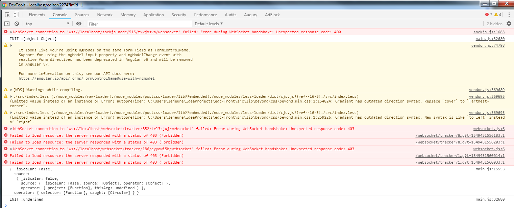A2.3.2 - Proposition d'amélioration d'un service
Une fois la timeline mis en place, j'ai remarqué les fichiers commençaient a se multiplier. Alors qu'ils avaient tous une base commune. Ils prennent tous en entrée des activités pour se construire.
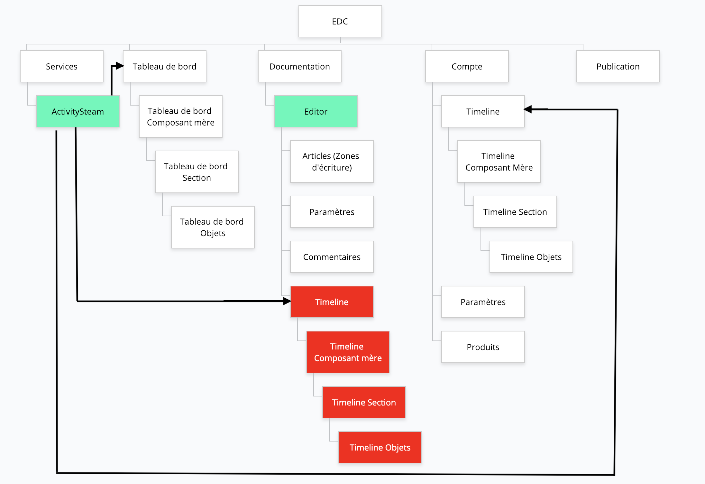Le but pour moi était donc de faire du refactoring, c'est à dire de faire un composant générique qui serait utilisable pour chaque composants et même pour les futurs timeline. Un composant simple et réutilisable. C'est ainsi que j'en ai déduit l'architecture suivante :
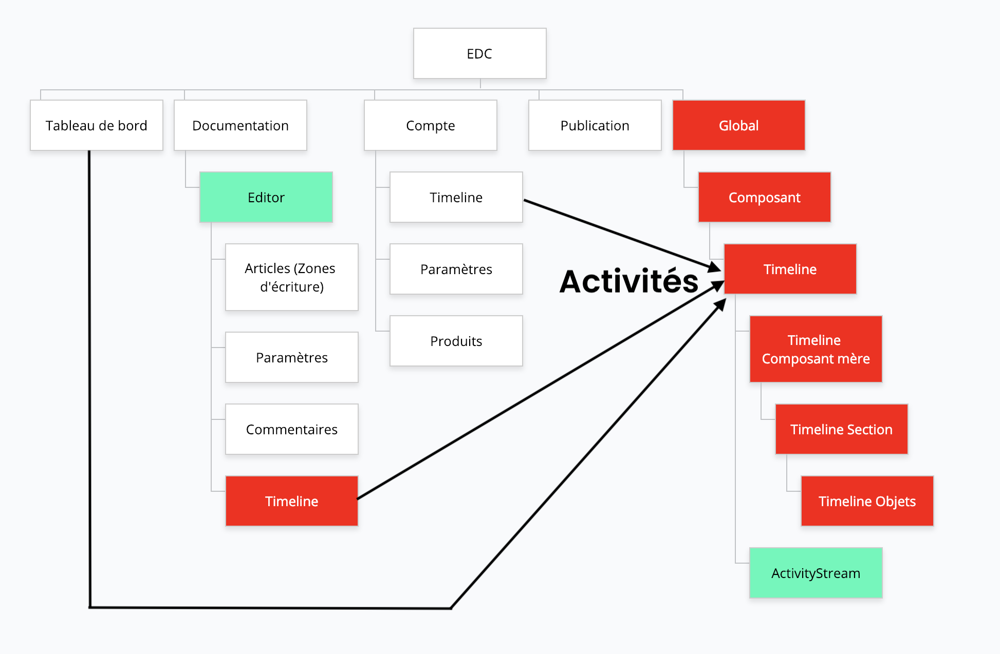Désormais avec cette structure, le composant est complétement générique il contruit en fonction des activités qu'il reçoit peut importe de qui provient les données.
Avec cette stucture les activités sont récupérées dans les controllers, c'est à dire les composant de documentation/Tableau de bord/Compte.
CONCEPTION ET MAINTENANCE DE SOLUTIONS APPLICATIVES
A3.1.3 - Prise en compte du niveau de sécurité nécessaire à une infrastructure
J'ai mis en place un système de verification des droits d'accès permettant de filtrer l'accéssibilité aux données de la timeline.
Ce processus est applicable pour tout les roles de l'application attribuables
A4.1.1 - Proposition d'une solution applicative
La solution applicative du projet est la suivante. Elle a été développé en Angular pour le Front et en JAVA pour le Back. C'est une ligne anti-chronologique, permettant de suivre l'historique de documents (C'est à dire, les actions qui ont été fait sur le document).
Le besoins du projet était les suivants : Affichage de l'avatar, affichage du nom complet, affichage des activités alternivement (gauche/droite), affichage des icons en focntions de l'action réalisée.
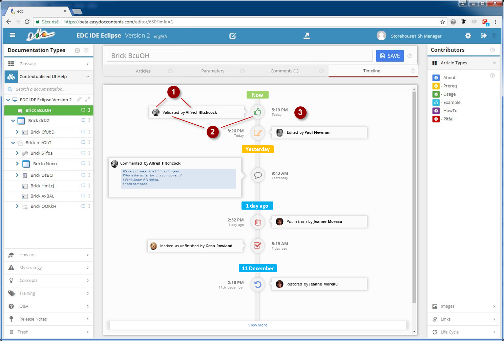A4.1.2 - Conception ou adaptation de l'interface utilisateur d'une solution
L'interface pour l'utilisateur est relativement simpliste, elle présente une ligne anti-chrionoilogique permettant d'y presenter l'hisotirques des actions éfféctuées sur le document en cours.
Pour chaque activité, il est indiquer l'action réalisé mais aussi le nom et prenom ainsi que son avatar en plus.
Le boutton View More permet à l'utilisateur d'afficher 10 activités en plus cela permet d'éviter de charger et d'afficher toutes les activités d'un coup (Surcharge/Crash si 100000+ d'activités).
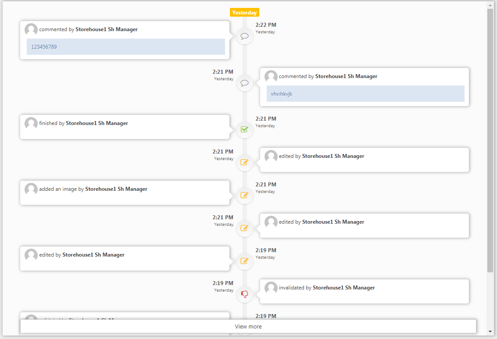A4.1.4 - Définition des caractéristiques d'une solution applicative
Description d'une des taches du projet, en fonction du besoin du chef de projet afin de l'intégrer.
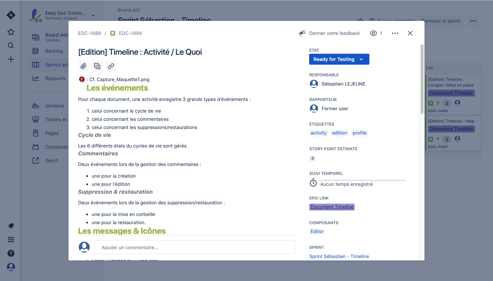 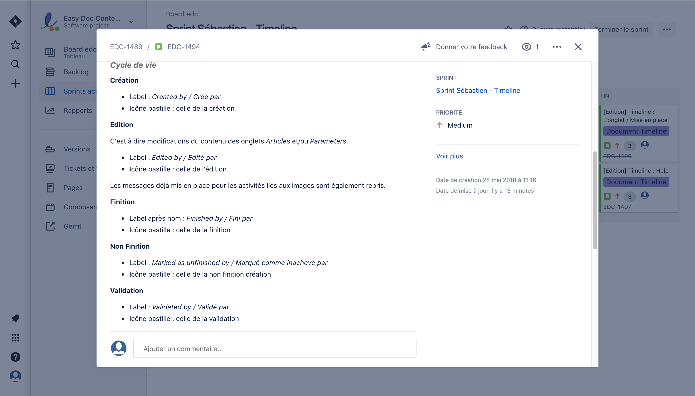 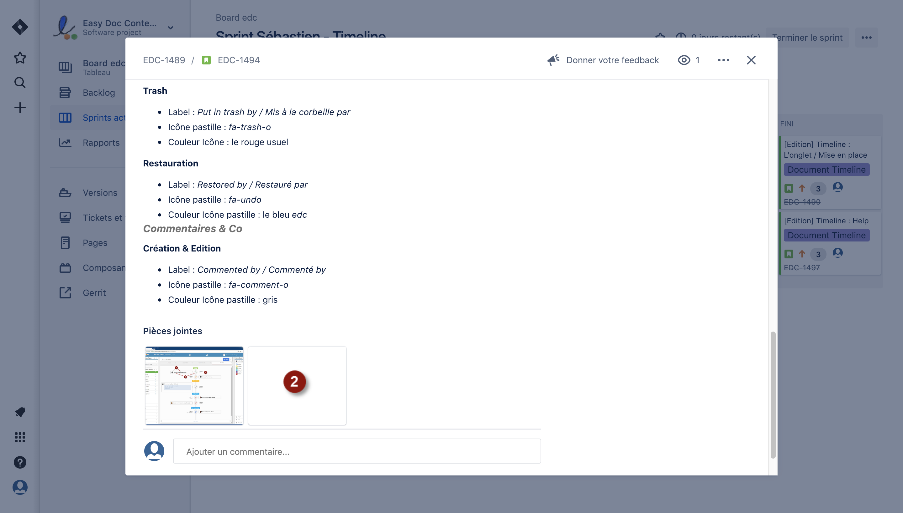A4.1.6 - Gestion d'environnements de développement et de test

J'ai installer IntelliJ pour les développement du Back et Front. Pour simuler le server en local, j'ai mis en place Maven pour lancer le Back et mis en place Java pour y faire les développments.
Pour le Front la mise en place du système de compilation s'est faite grâce à NodeJS avec un npm install et npm start.
Pour gérer les redirections d'URL j'ai décidé d'utiliser NGinx. Par exemple si l'on tape localhost/api, grâce au fichier de configuration, je lui ai demandé de pointer sur localhost:8000 : le port du Back.
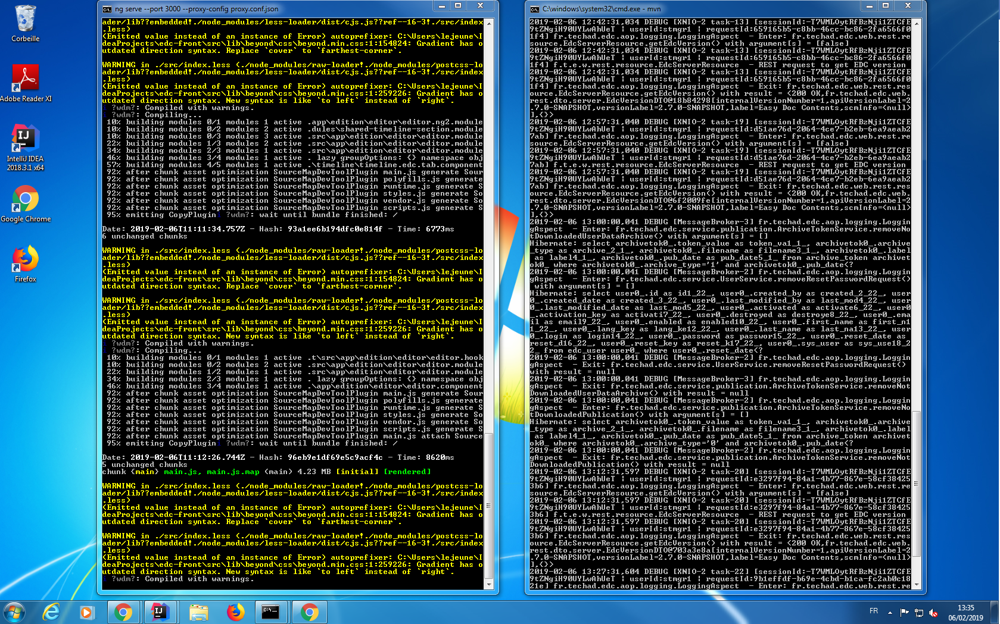
A4.1.7 - Développement, utilisation ou adaptation de composants logiciels
Le développement du front s'est éfféctué en plusieurs étapes.
Tout d'abord, je devais récupérer les données des variables depuis l'extérieur grâce aux @Input() pour ensuite les utiliser. Ensuite j'ai créé des deux fonctions fetchNotificationTimeline() et fetchNotificationList(), elles permettent de récupérer les liste des activités et commencer à construire les notifications pour les afficher dans le composant.
Par la suite, je devais gérer le format d'affichage (List ou Timeline) tout cela était géré dans le ngOnInit() c'est ce qui est éffectué lors de l'initialisation.
Enfin, toutes les informations étaient envoyé aux composant chargé de la mise en forme de la timeline sous form de Tableau.
§
J'ai mis en place des tests d'intégration permettant la validation du Back et pour valider les données. Cette étape est importante pour le développment du Front.
A4.1.9 - Rédaction d'une documentation technique
J'ai ajouté des commentaires dans le code permettant de générer une javaDoc pour aider les futurs développeurs.
A4.1.10 - Rédaction d'une documentation d'utilisation
J'ai écrit un Readme permettant la mise en place des serveur et des configurations a adapter dans NGinx.
A4.2.1 - Analyse et correction d'un dysfonctionnement, d'un problème
Un des derniers problèmes sur les tests que j'ai rencontré était le qu'une fonction pointait sur null
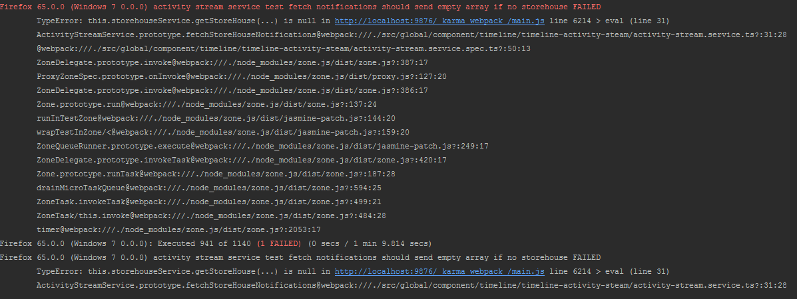A la ligne 18, au lieu de demander directement null, il fallait tout simplement demander un storeHouse qui n'existait tout simplement pas pour qu'il puisse renvoyer un tableau vide.
A4.2.2 - Adaptation d'une solution applicative aux évolutions
J'ai mis en place la nouvelle structure. Cette strcuture permet en effet de reduire la quantité de fichiers inutiles et surtout d'être un composant 100% générique. C'est à dire qu'appartir d'activité on peut désormais construire nimporte quelle timeline sans aucuns soucis.
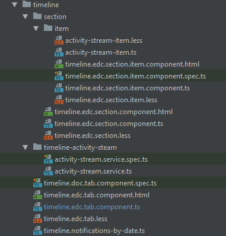Pour que le composant puisse être utilisé par les composants enfants, j'ai créé un module, cela permet en effet d'établir la communication de données'.
A4.2.3 - Réalisation des tests nécessaires à la mise en production
J'ai mis en place des tests d'intégration permettant la validation du Front et pour la bonne gestion des composants. Cette étape est importante pour valider le projet dans son ensemble. Ces tests sont ensuite exécuté par le chef de projet.
Une fois avoir écrit les tests, je devais lancer la commande yarn test qui permettait de lancer la commande angular ng test --watch=false. Elle permet de lance un navigateur et executer les tests.
Ensuite dans le terminal de l'IDE, la batterie de tests génère un rapport d'éxecution.
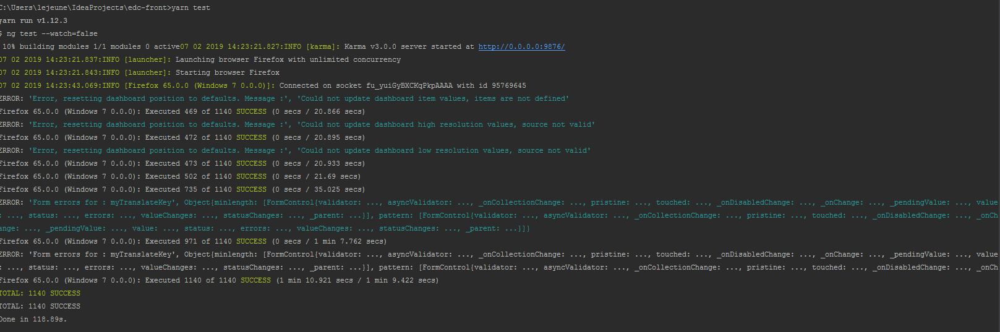A4.2.4 - Mise à jour d'une documentation technique
J'ai mis a jour la javaDoc .
CONCEPTION ET MAINTENANCE DE SOLUTIONS APPLICATIVES
A5.2.3 - Repérage des compléments de formation ou d'auto-formation
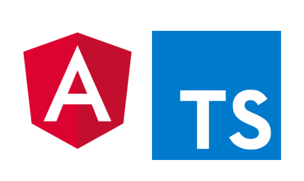Le Data Binding avec Angular et TypeScript
Le databinding, c'est la communication entre votre code TypeScript et le template HTML qui est montré à l'utilisateur.
Angular a défini quatre sortes de Data Binding pour synchroniser le template et le component. Il est ainsi possible de propager une donnée du component vers le DOM, du DOM vers le component et dans les deux sens.
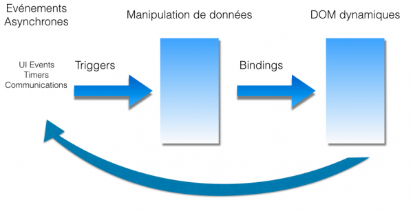Il est possible de créer des propriétés personnalisées dans un component enfant afin de pouvoir lui transmettre des données depuis l'extérieur. Pour ce faire, il faut utiliser le décorateur @Input(). Contrairement au décorateur @Output() qui permet à un composant de transmettre un évenement / des données à son parent.
A5.2.4 - Étude d‘une technologie, d'un composant, d'un outils
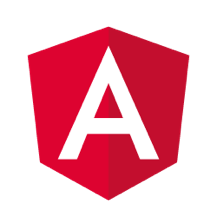Angular 7
Angular est un framework Javascript côté client qui permet de réaliser des applications de type "Single Page Application". Il est basé sur le concept de l'architecture MVC (Model View Controller) qui permet de séparer les données, les vues et les différentes actions que l'on peut effectuer.
Angular est aujourd'hui basé sur une architecture de composants complètement indépendants les uns des autres. Une fois le composant principal chargé, il analyse ensuite la vue html correspondant à celui-ci et détecte s’il comporte des composants imbriqués. Si c'est le cas, Angular va trouver toutes les correspondances et exécuter le code lié à celles-ci. On peut imbriquer autant de composants que l'on souhaite. Un composant dans Angular sert à générer une partie de code html et fournir des fonctionnalités à celle-ci. C'est pour cela qu'un composant est constitué d'une classe dans laquelle on pourra définir la logique d'application pour ce composant avec des propriétés, des méthodes...
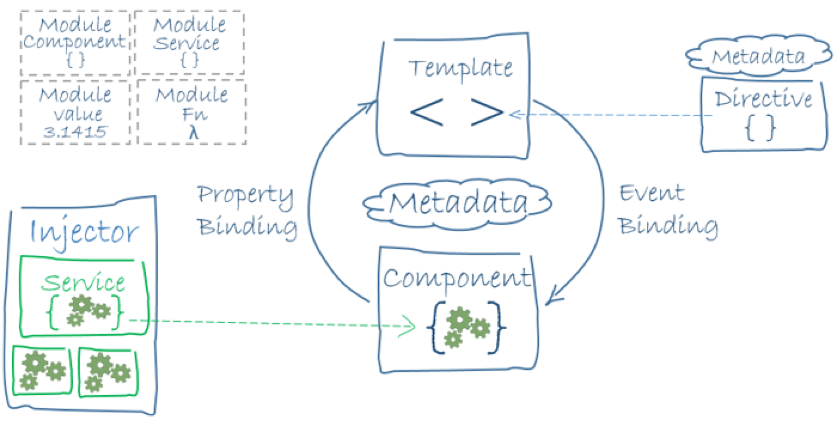
Angular a également été conçu pour permettre l'injection de dépendances. C'est ce principe qui nous donne la possibilité de créer des composants, des directives, d'une manière modulaire où ils ne sont pas forcés de se connaître mutuellement pour coexister. Angular va gérer la création d'instances et les injecter dans les endroits où elles sont nécessaires.
Un service est une classe qui contiendra une logique que l'on va pouvoir utiliser un peu partout dans notre application. L'injection de dépendances va nous permettre ainsi d'injecter nos services seulement aux endroits souhaités et éviter de répéter du code logique dans chaque composant.
Contact
Par courrier
Beynes, 78650
FRANCE
Par E-mail
sebastien.lejeune6@gmail.com
Par téléphone
(+33) 6 61 31 68 24